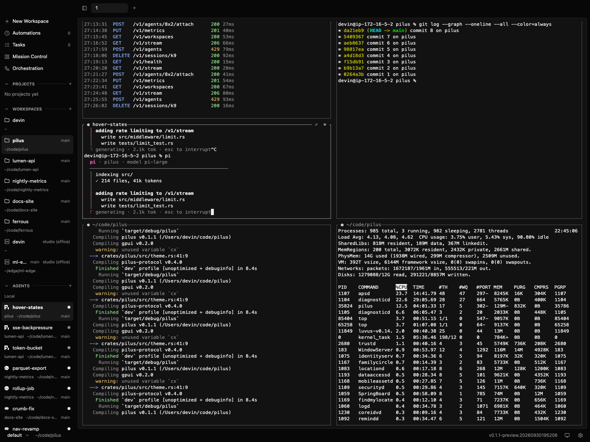
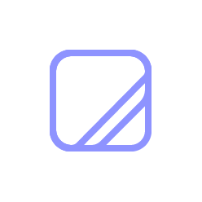
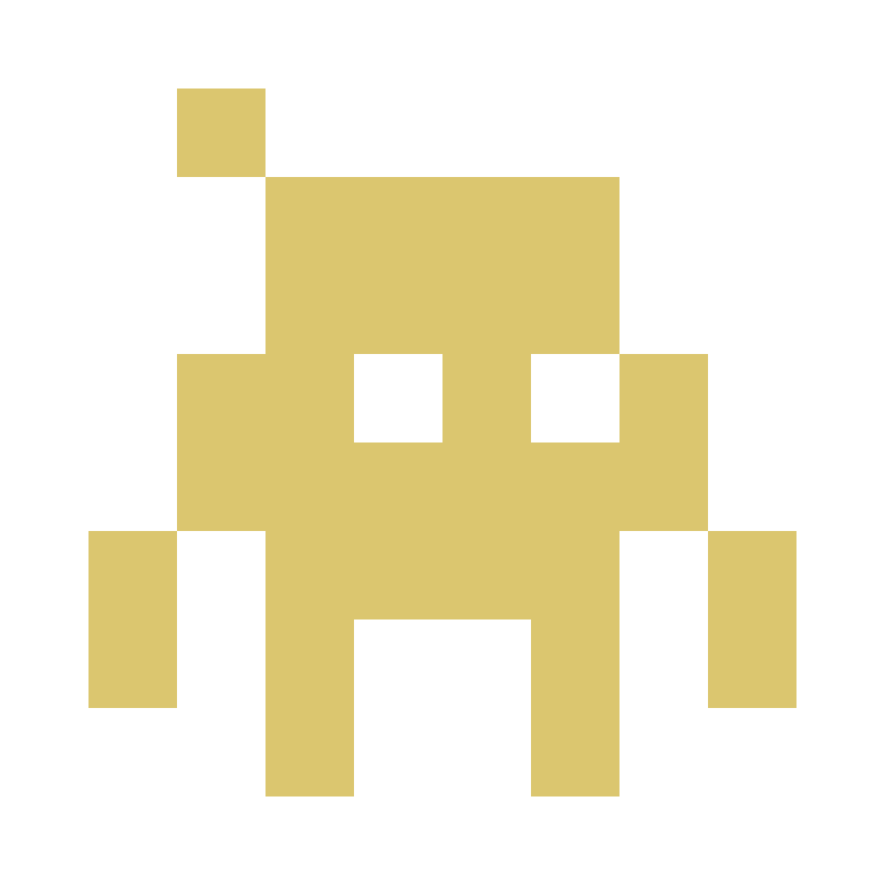

one pilus is all you need
pilus brings Pi, Iroh, and Luvus together so you can work, automate, and access all your agents anytime, on any of your computers. Also, pilus is a terminal after all.

Create. Automate. Orchestrate.
From your Mac or from your phone.
On your Mac or on some cloud.
Thanks to Luvus Universal Harness Protocol (UHP)
Learn More about UHP-
Pi
Pi powers the pilus Chief of Staff. It can put your Claude Code, Codex, or any other agent on the job. Just say the word.
-

Iroh
Iroh keeps your computers talking anywhere, including in your pocket.
-

Luvus
Luvus keeps your agents working in any workspace, one session, automations, or loops.
After all, pilus is a terminal client.
Built on Rust & GPUI
I'm daily driving a MacBook Neo now. The app should be thin, lightweight and efficient. Never imagined myself with 6 CPUs & 8GB memory in 2026 tho.
Remote-workspace ready
All my work is mostly on remote servers — some in the cloud and others on my dusty Mac and poor Mac mini M2. I can't leave this workflow since forever.
Persistent by default
All open tabs, panes, agents are still there and working when I close the laptop, reopen, or survived from a flaky mobile connection. Maybe survived the power outage too.
Not a harness
Your favorite agents already did the best. Luvus gives everything your agents need, pilus gives you the client you need.
Mobile-ready
Sometimes all your agents need the most is your confirmation. Give them a yes or no or other without opening your laptop.
Open Source
Inspect the code, fork it, run your own custom. The software is provided as-is with no warranty.
Before you get started.
What do I need to use pilus?
A Mac and the Luvus CLI. pilus starts the local daemon if needed; Luvus keeps your workspaces and sessions running.
Will my work keep running when I close pilus?
Yes. Closing the window detaches the client, not the Luvus daemon. Reopen pilus to reconnect to your workspace.
Can I connect to remote machines?
Yes. Save an SSH machine in pilus to see its Luvus workspaces and agents alongside your local ones.
Which agents can I use?
Pi is the default when installed. pilus also shows the agents Luvus reports across your connected workspaces.
Where can I run pilus?
pilus is a native macOS app today. You can connect from your Mac to Luvus on saved remote machines over SSH.
How can I try it?
There is no public macOS binary yet. You can build the early v0.1 client from the source repository.